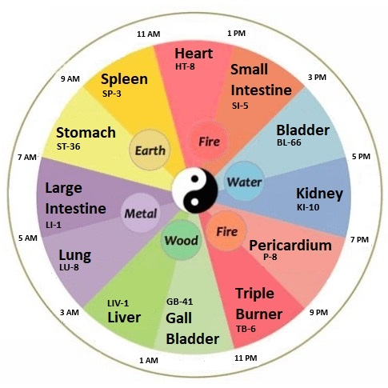

The 12 Horary Points
Understanding the Chinese Organ Clock and Time-Based Acupressure System
The Chinese Organ Clock
According to Traditional Chinese Medicine (TCM), each of the twelve meridians has a daily two-hour window when it is most active, known as "Horary Time." This creates a 24-hour cycle where different organ systems are energetically dominant at specific times.
The most fascinating aspect of this system is that when you stimulate the horary point associated with your destination time—rather than your current time—you help your body begin syncing with the new time zone in advance. This technique signals your internal clock to shift from the departure time zone toward your destination's rhythm.
The Chinese Organ Clock Wheel
The Chinese Organ Clock shows each meridian's peak activity time and its associated element. Each point aligns with one of the twelve meridians and its peak energetic activity.
The 12 Horary Points
Each point is stimulated during its corresponding two-hour window to support the function of that meridian. Here are the 12 points used in JetLagPro:
Stimulation: Press into the point and rub deeply with a firm pressure. If you feel you are pressing against the bone, you have it right!
Stimulation: Press into this point and rub it with a firm pressure. Steady pressure works as well.
Stimulation: Lean down and firmly massage the muscle with your fingers pressing into the flesh. Or, cross your leg over the other and massage it that way.
Stimulation: Use your thumb to press back and forth into this point. It should feel like you are rubbing into the base of the bone and will often be sore.
Stimulation: Use any finger or your knuckle to press into this point. It is between the bones so you have to press firmly. You can use a press and release, press and release technique.
Stimulation: Use your index finger to press into this point while moving your hand away and to your body.
Stimulation: Use your index or middle finger to rub into the base of the big bone. It's easier to do if your leg is crossed over your knee.
Stimulation: Press your thumb into this area. Use a press and release, press and release technique as shown in the video.
Stimulation: Use any finger or your knuckle to press into this point. It is between the bones so you have to press firmly. You can use a press and release, press and release technique.
Stimulation: Use your index finger or thumb to press between the bones and into the point while moving your wrist back and forth as in the video.
Stimulation: Cross your leg over your knee or lean over if you have enough room. Press into the depression and rub into the point while maintaining a steady pressure.
Stimulation: Press into this point and rub it with a firm pressure. Steady pressure works as well. It can be done with your foot on the floor or with your foot crossed over your knee.
How This Works for Jet Lag
When you travel across time zones, your body's internal clock (circadian rhythm) remains synchronized with your departure time zone. By stimulating the horary points associated with your destination time zone, you're essentially "telling" your body what time it should be at your destination.
For example, if you're flying from New York to London (5-hour time difference), and it's 3:00 PM in New York but 8:00 PM in London, you would stimulate the point that's active at 8:00 PM (Pericardium-8) rather than the point active at 3:00 PM (Small Intestine-5).
This technique helps your body begin the process of adjusting to the new time zone before you even arrive, potentially reducing the severity and duration of jet lag symptoms.